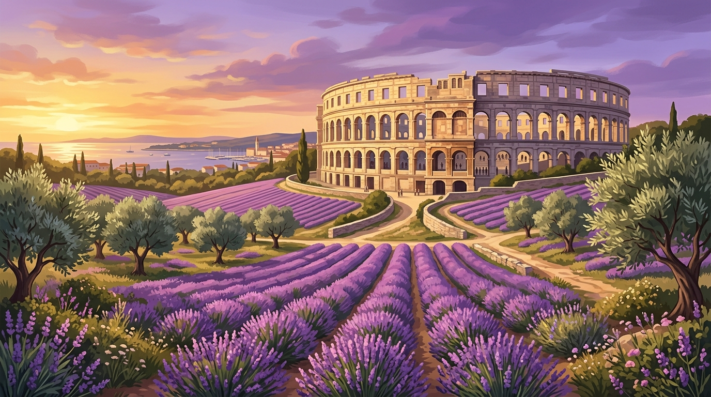

"Zajedno možemo više i bolje!"
"Svijet će vas pitati tko ste, a ako ne znate, sam će vam reći."
Carl Gustav Jung
Ja sam Dragica Pršo. Po zanimanju sam profesorica i knjižničarka savjetnica s višegodišnjim iskustvom u prosvjeti i radu s mladima. Svaki radni dan provodim u društvu knjiga i učenika, učeći ih kritičkom razmišljanju, čitanju između redaka i važnosti postavljanja teških pitanja.
Kao nezavisna gradska vijećnica u Gradu Puli, taj isti prosvjetiteljski i knjižničarski nagon donijela sam u vijećnicu. Ne prihvaćam šablonske odgovore. Inzistiram na točnosti, transparentnosti do posljednje lipe i zelenoj perspektivi za naš divni grad.
Moji su prioriteti jednostavni - želim Pulu koja uvažava glas svakog kvarta, Pulu u kojoj se sadi mediteransko mirisno bilje umjesto betoniranja i u kojoj se javne tajne više ne skrivaju u ladicama.
Radim bez podjela za interese svakog stanovnika Pule.
Otvorenost, odgovornost i poštenje u svakoj odluci vijeća.
Brinem o zelenom prostoru i ekološkoj budućnosti naše djece.
Slušam, povezujem i izravno zastupam vaše interese.
Pratite izravne transkripte mojih postavljenih pitanja gradu Puli i njihove službene odgovore kako biste imali jasan uvid u rad gradskog vijeća.
Pretplatite se na tjedni vijećnički glasnik Dragice Pršo. Ako imate pitanje, prijedlog ili komunalni problem, pošaljite ga izravno na e-mail.
Moja periodička pisma u kojima donosim transparentne vijesti, savjete o vrtlarstvu lavande i detalje s najnovijih rasprava.
Podijelili smo preko 500 sadnica lavande i ružmarina našim sugrađanima na tržnici. Pročitajte upute za njegu vaše nove biljke i naše daljnje planove za zeleni Valdebek i Monte Zaro.

Javni proračun nije privatni novčanik vladajućih strukturama. Saznajte kako se troši novac na medijsko oglašavanje i zašto inzistiram na javnim natječajima za svaku kunu.
Ovaj obrazac se otvara kao pripremljeni e-mail za Dragicu. Za potpuno spremanje prijedloga u bazu trebala bi vanjska forma ili Ghost custom integration.
Ghost Admin je odvojena aplikacija zbog sigurnosti. Tema može ponuditi prečace, ali ne može mijenjati ili zamijeniti interne Ghost admin panele.